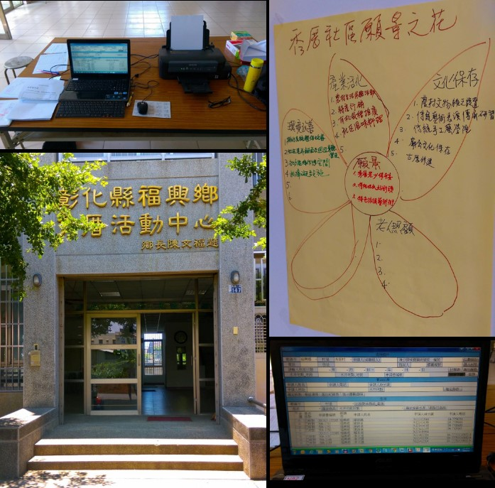

實習第一天，到彰化縣福興鄉的秀厝村作水井列案申請作業，協助村民申報水井資料登錄，並有師傅去現場調查水井的深度、口徑等。今天來申請的人大約只有十來個。聽說之前來的人超多，有一天有將近200多人，大家忙到連飯都沒時間吃，這次來主要是為了一些之前還沒來申報的人。第一天就要馬上熟悉線上登錄系統的操作流程，以及應付各種突發問題，再加上鄉下多是講台語，我就像鴨子聽雷般，當下真的非常緊張，深怕會出錯，幸好有兩個叔叔在一旁支援以及教導，才能順利完成任務。我發現公司裡不管是同事之間的溝通還是跟民眾接觸大部分都是用台語，看來學會台語是當務之急啊!

後來上網查了才知道，原來從2013年起彰化縣政府就開始推動水井列案申請作業，但由於許多農民深怕列管之後下一步就是封井，因此抱持觀望態度，使得申報列管的水井口數只佔全縣總數的1.3％。農民會對全縣水井調查存疑是能理解的，若沒有灌溉水，如何發展農業，農民擔心不登記列管的話，以後被查到就會被封井，但是又怕登記的話，是否有朝一日還是要封井。這項全縣水井列案申請作業是屬於「雲彰地區地層下陷具體解決方案暨行動計畫」的一部分，不論水井的用途是工業用水、民生用水、農業灌溉用水或是養殖漁業用水，全部都要列案管理，粗估全縣約有七萬五千多口水井，大多數都未依法申請，因此水利署才讓先前沒有申請的水井來辦理列案申請。
長期以來台灣地區因產業發展、土地利用與水源供應三者間難以同步平衡考量，在水源尚未拓展地區發展耗水產業，導致水資源開發不及用水需求，以致持續超抽地下水而引發地下水鹽化、地層下陷、長期淹水及國土流失等問題，違反了永續利用的目標，但對於農民卻是攸關到他們的生存權。一方面是站在規畫者的角度，希望國土能達到永續的利用，盡可能減少任何人為對環境的衝擊，但想到這些老農民若是水井被封了等於是斷了他們賴以維生的工具，既不希望地層下陷更嚴重，又不希望這些純樸的老農民受到傷害的矛盾，這兩者間要如何取得平衡相當的困難。